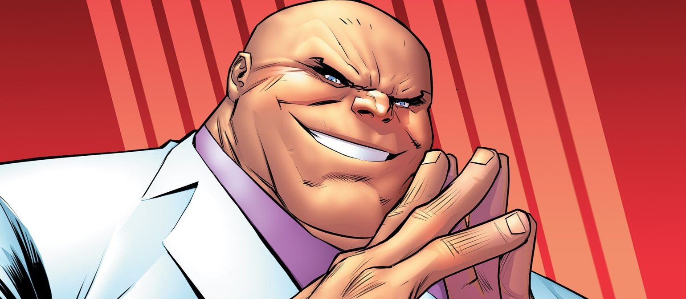

About Wilson Fisk
Wilson Fisk is a supervillan AKA Kingpin who rules over New York City's underground with uncanny savvy and iron fist, becoming a dynamo crime boss as feared as he is respected.
The Kingpin
The Kingpin Characteristics
- Ruthless
- Cunning
- Wide-bellied
Worst of Kingpin
The worst things Kingpin has have done in the Marvel Comics